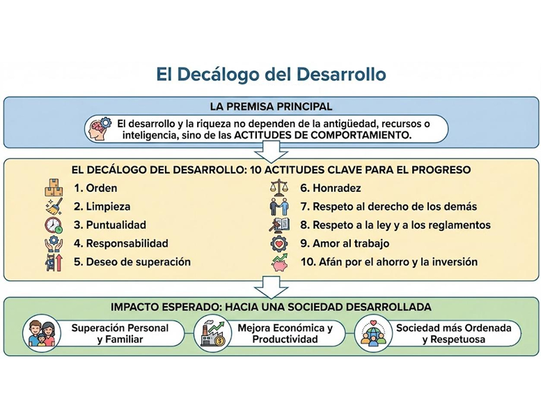

En esta obra Octavio Mavila Medina aborda la interrogante de por qué existen diferencias tan grandes entre países pobres y ricos. A través de su análisis el autor descarta que el desarrollo dependa de factores como la antigüedad de la nación, la abundancia de recursos naturales o la inteligencia de sus habitantes.
La idea central del libro es que el progreso y la riqueza dependen de un solo factor crucial: las actitudes de comportamiento en las mentes de las personas. Como ruta hacia el cambio se presenta "El Decálogo del Desarrollo", una lista de diez hábitos fundamentales observados en las sociedades exitosas que si son adoptados mayoritariamente permitirían a un país salir del subdesarrollo en poco tiempo.
